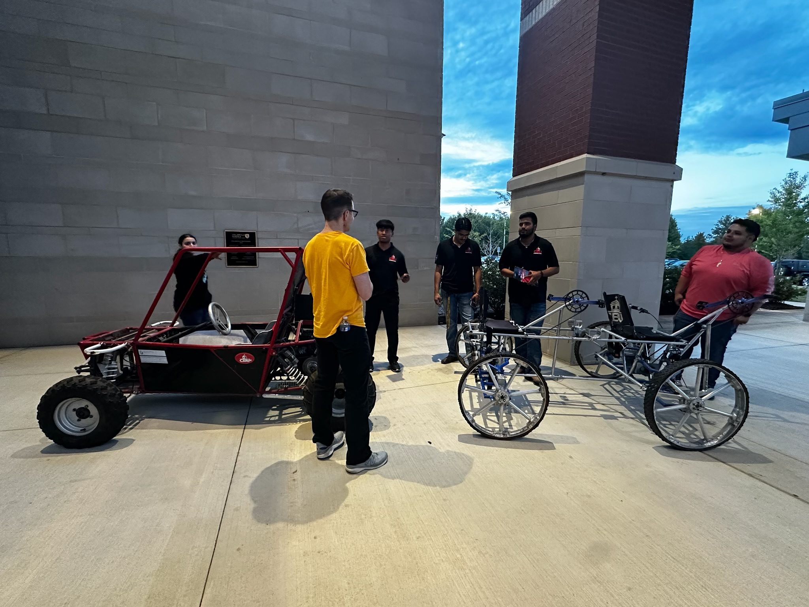

About Christian Brothers University
Christian Brothers University (CBU) is a private, Catholic university in Memphis, Tennessee, known for its commitment to academic excellence, service, and community. Founded in 1871 by the De La Salle Christian Brothers, CBU has been shaping the minds of students for over 150 years.
Mission & Identity
CBU fosters faith, service, and community, welcoming students from diverse backgrounds into a supportive and academically rigorous environment. Our goal is to educate future leaders who will make an impact in their careers and society.
The Engineering Program
CBU is known for its strong engineering programs, offering cutting-edge education in mechanical, electrical, and civil engineering. Students gain hands-on experience through labs, industry partnerships, and real-world projects.
Rover Team at CBU
Our Rover Team is a student-led group focused on designing and building a planetary exploration vehicle. This project provides practical engineering experience while fostering teamwork and innovation.
Why Choose CBU?
- ✅ Nationally Recognized STEM Programs
- 🌍 Diverse & Inclusive Community
- 🛠 Hands-On Learning & Real-World Applications
- 🔬 Cutting-Edge Research & Innovation
Join Us!
Interested in being part of CBU’s engineering legacy? Whether you're a student, faculty, or space enthusiast, there's a place for you in the CBU Rover Team. Get involved and help shape the future of planetary exploration!